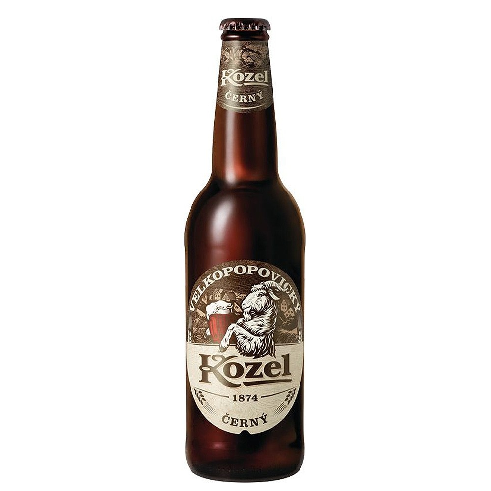

Темное пиво — это большая группа различных по крепости напитков
насыщенного темного цвета, от коричнево-бордового до практически черного.
Несмотря на разницу и индивидуальность каждого, есть у них общая черта — присутствие во вкусе и аромате солодово-карамельных
ноток обжаренного зерна, иногда с шоколадно-кофейными и фруктовыми оттенками, а также бархатистое, сладковатое послевкусие.